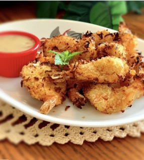

Air Fryer Coconut Shrimp

Pointless Life story somehow related to shrimp
This is one of my favorite recipes of all time, this succulent and flavorful dish is part of my weekly routine and it is so simple to make. So simple that it brings back memories of the springtime of my youth. Before I was plagued with perpetual depression stemming from monotonous routines and societal pressures telling us how we are supposed to act and dress.
Ingredients
- 1/2 cup all purpose flour
- 1 1/2 teaspoons ground black pepper
- 2 large Eggs
- 2/3 cup unsweetened flaked coconut
- 1/3 cup panko bread crumbs
- 12 ounces uncooked medium shrimp, peeled and devined
- cooking spray
- 1/2 teaspoon kosher salt
- 1/4 cup honey
- 1/4 cup lime juice
- 1 serrano chile, thinly sliced
- 2 teaspoons fresh cilantro, chopped
- Stir together flour and pepper in shallow dish. Lightly beat eggs in a second shallow dish. Stir together coconut and panko in a third shallow dish. Hold each shrimp by the tail, dredge in flour mixture, and shake off excess. Then dip floured shrimp in egg, and allow any excess to drip off. Finally, dredge in coconut mixture, pressing to adhere. Place on a plate. Coat shrimp well with cooking spray.
- Preheat air fryer to 400 degrees F (200 degrees C). Place 1/2 the shrimp in the air fryer and cook about 3 minutes. Turn shrimp over and continue cooking until golden, about 3 minutes more. Season with 1/4 teaspoon salt. Repeat with remaining shrimp.
- Meanwhile, whisk together honey, lime juice, and serrano chile in small bowl for the dip.
- Sprinkle fried shrimp with cilantro and serve with dip.
Home